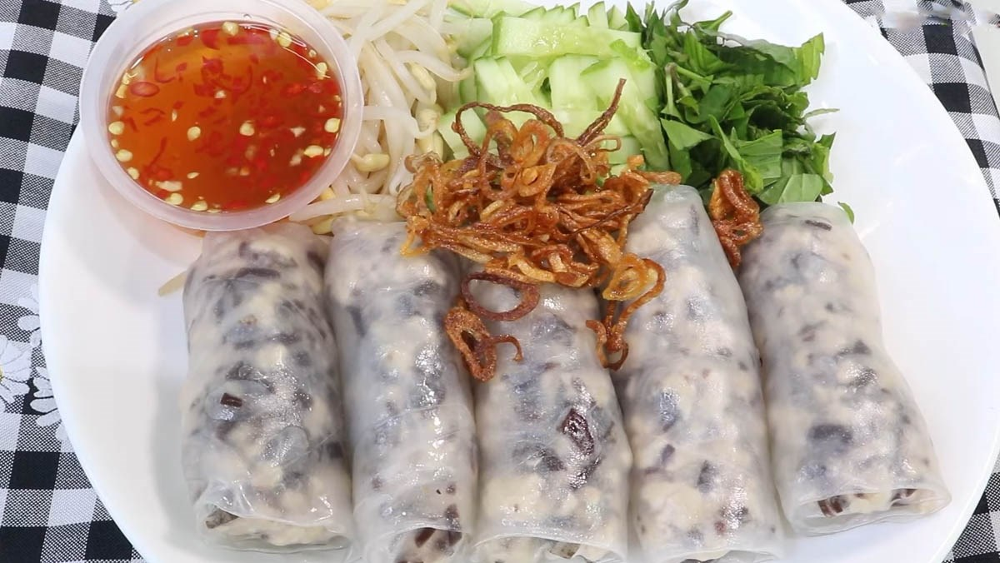

Home

Mô tả
- Bánh cuốn là món ăn sáng quen thuộc, nổi bật với lớp vỏ bánh mỏng mịn, dẻo dai làm từ bột gạo, bọc lấy phần nhân thịt mộc nhĩ đậm đà, ăn kèm chả quế, hành phi tự làm vàng ruộm và nước mắm ấm.
Nguyên liệu
- Vỏ bánh: 200g bột gạo lọc, 50g bột năng (hoặc dùng gói bột bánh cuốn pha sẵn), 650ml nước lọc, một chút muối và dầu ăn.
- Nhân bánh: 200g thịt băm, 4-5 cái mộc nhĩ băm nhỏ, hành tím băm.
- Ăn kèm: Hành phi, chả quế hoặc chả lụa, rau thơm, giá đỗ chần.
- Nước chấm: Nước mắm, đường, chanh, ớt, nước ấm.
Các Bước làm
- Pha bột & Làm nhân: Hòa tan bột gạo, bột năng, nước và xíu muối, để bột nghỉ khoảng 30 phút. Phi thơm hành tím, cho thịt băm và mộc nhĩ vào xào chín, nêm nếm gia vị vừa ăn để làm nhân.
- Tráng bánh (bằng chảo chống dính): Phết một lớp dầu cực mỏng lên chảo, đợi chảo nóng vừa thì múc một vá bột đổ vào, nghiêng chảo để bột dàn đều thành lớp thật mỏng. Đậy vung khoảng 30 giây cho bánh chín trong. Úp chảo ra một cái mâm đã phết dầu.
- Cuốn bánh & Thưởng thức: Cho một thìa nhân thịt mộc nhĩ vào giữa lá bánh, nhanh tay cuộn tròn lại. Cắt bánh thành miếng vừa ăn, rắc hành phi lên trên. Ăn kèm chả, giá chần và chấm nước mắm chua ngọt nhẹ.